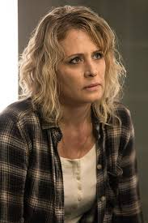

Mary Winchester, mãe de Sam e Dean Winchester, tem uma história trágica e complexa. Ela foi assassinada por uma entidade sobrenatural, o demônio Azazel, quando seus filhos ainda eram muito pequenos. Sua morte foi o catalisador que levou seu marido, John Winchester, a se tornar um caçador de criaturas sobrenaturais, dedicando sua vida a caçar o que matou sua esposa.
No entanto, Mary tem uma história mais profunda. Ela foi criada em uma família de caçadores e, no início de sua vida, não tinha ciência da verdadeira natureza do que sua família fazia. Quando se casou com John, ela abandonou a vida de caçadora para viver uma vida normal e ter uma família. Sua morte, contudo, não foi o fim de sua história: ao longo da série, Mary retorna de diferentes maneiras, e sua ligação com a caça ao sobrenatural é revisitada em várias partes da trama.
Mary Winchester
História de Origem
Habilidades e Poderes
- Conhecimento sobre o sobrenatural (devido ao seu passado como caçadora)
- Conexão com o além (ao retornar da morte, Mary revela habilidades espirituais)
- Perícia em combate e sobrevivência (treinada desde jovem no uso de armas e caça)
Relações
- John Winchester - marido (relações de amor e tragédia)
- Sam Winchester - filho (relação mãe-filho, com muito amor e sacrifícios)
- Dean Winchester - filho (relações de proteção e saudade)
- Azazel - o demônio responsável por sua morte
- Cas - interação com o anjo Castiel após seu retorno à vida